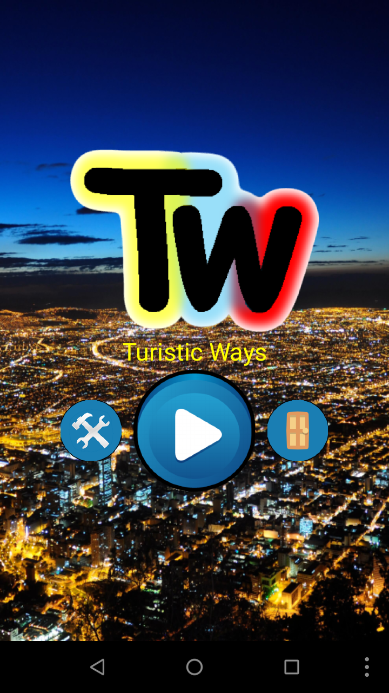
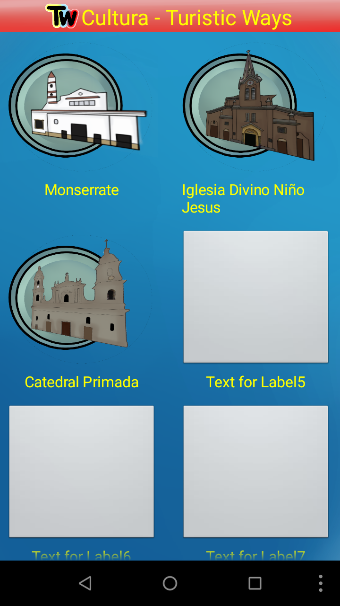
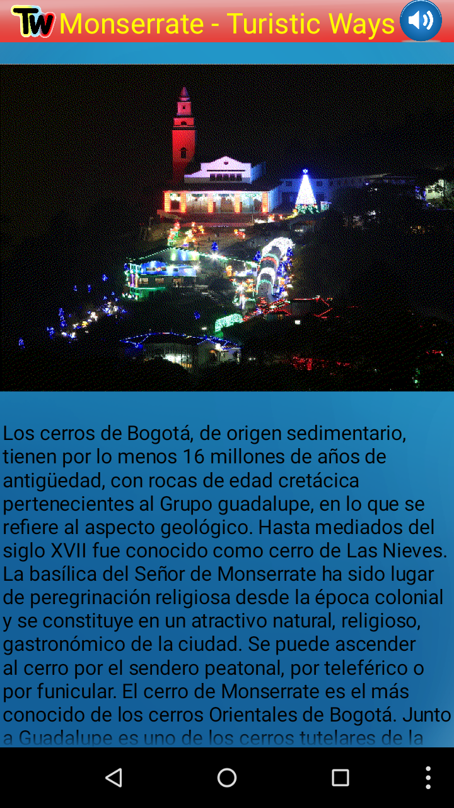
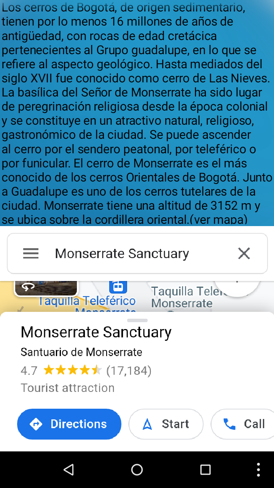

TURISTIC WAYS
|
Turistic ways es una aplicación que permite conocer los lugares turisticos de Bogotá, conociendo su ubicación, descripción e imagenes del mismo. Se puede encontrar los lugares turisticos en diferentes categorias |
Multimedia
|  |  |
 |  |  |